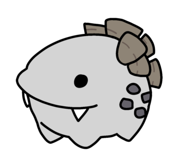

O "Destroyman, the Third" (ou "Destruidor, o Terceiro") é um Sharko em miniatura que foi introduzido ao jogo Deepwoken como uma piada de primeiro de abril em 2023. Seu único propósito era para ocasionalmente falar coisas aleatórias para o jogador. Originalmente, Destroyman III era obtível ao contrair a "Coral Fever" (ou "Febre Coral") ao ser atingido pelos Sharkos encontrados pelo mundo, com uma chance garantida de se contrair a doença, ou quando algum outro jogador infectado espirrava em você, com uma taxa de infecção mais baixa.
Com a contenção da leva original da Febre Coral, Destroyman III estava destinado a desaparecer para sempre. Porém, agora ele habita o monumento do Great Sharko Rumbling (ou "Grande Tremor dos Sharkos") localizado nas docas de Etris. Simplesmente dançar na frente do monumento irá te garantir uma versão inofensiva e não contagiosa da Febre Coral, que apenas inclui o Destroyman III. Caso deseje, dançar na frente do monumento novamente irá DESTRUIR Destroyman III. (Quanta crueldade)
Ocupação
Poderes/Habilidades
Objetivos
Crimes
Destroyman III parece ter começado a existir muito antes da Febre Coral começar a existir. Ele caiu das costas dos seus caros Sharkos devido a se recusar a pagar impostos. De alguma forma se tornou autoconsciente do jogo em que participava, florescendo um grande ódio pelo jogo e seus criadores. Ele também é responsável por atos de terrorismo que resultaram no seu banimento do restaurante do renomado chef Lance Leshi em Etris.